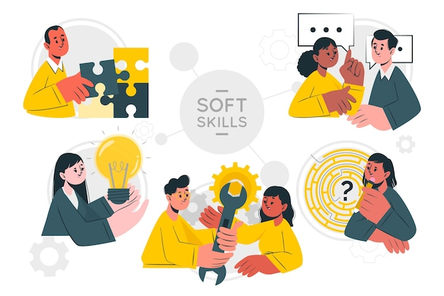
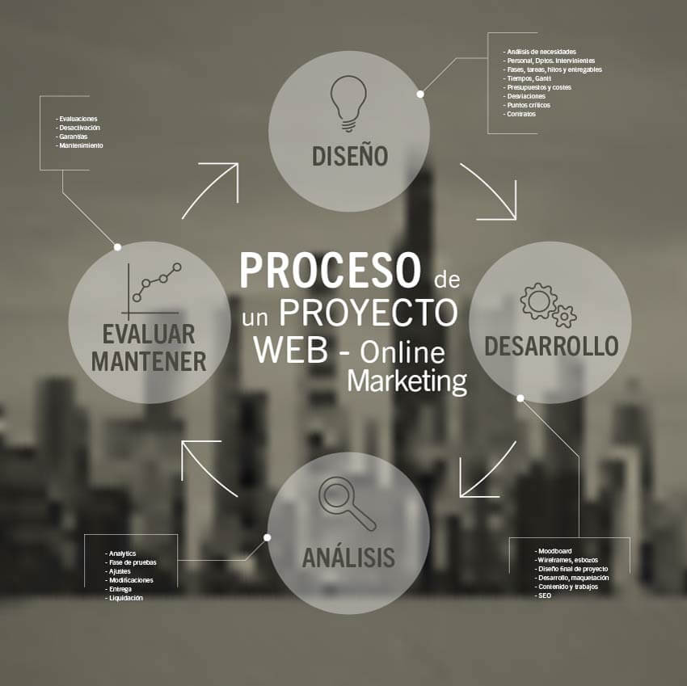

Soy una persona tranquila y relativamente sociable (Aunque aveces me da pereza conocer mas gente),
la realidad esque aveces me parece agotador tratar con cierto tipo de personas, pero en general
me relaciono con la mayoria de mis conocidos.

Mis pasatiempos son jugar videojuegos y programar aunque aveces de me problemas y sea tedioso
me divierto haciendolo.
Siendo honesto, no tengo habilidades a tomar en cuenta, lo unico que puedo decir
es que mi logica en programacion es muy buena, me adapto rapido a nuevos entornos y
trabajos a los que no estoy acostumbrado y soy bueno improvisando en cosas como
exposiciones para salir de apuros

En proyectos importantes no he trabajado en muchos, solo en mi practica profesional
del colegio, en la empresa en la que estuve me pidieron hacer una pagina para dicha
empresa llamada "landing page"

Facebook: Jose Emanuel Avila
X: @IceMugetsu